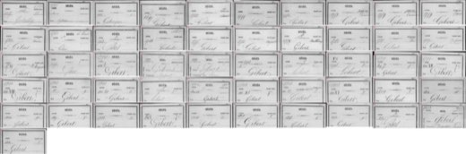
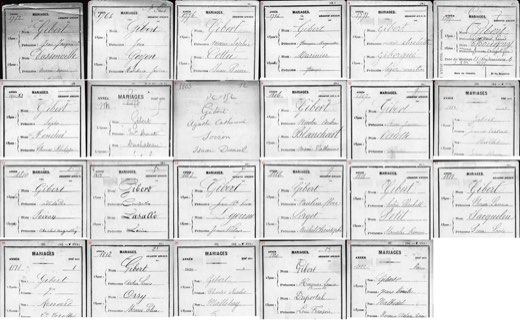

Côté Dubart · absente de l'arbre transmis, ajoutée par l'enquête
Paul César Gibert
Né en 1714? à Paris
Fils de François GIBERT.
Récit
Paul César Gibert est professeur de musique, officier de la chambre de Madame, sœur du Roi, et inspecteur de la manufacture royale de la Savonnerie, à Chaillot, « en survivance du sieur son père », selon l'avis de parents du 12 octobre 1787, qui le dit « défunt ». L'avis de 1790 reprend les mêmes qualités. Son père est François Gibert, valet de chambre du Roi et inspecteur de la Savonnerie, vivant en 1787 : « ayeul paternel » de ses enfants. Il est donc son fils ; la mère reste à établir (Marie Jeanne Dolhain par inférence).
Sa vie de musicien se devine dans les almanachs imprimés. L'Almanach musical de 1776 nomme un « Paul-César Gibert », auteur d'un Mélange musical et de la musique d'une Traduction de Catulle ; ceux de 1777 à 1779 listent un « Gibert, cour de l'Orangerie » comme compositeur et maître de chant, de clavecin et de composition ; celui de 1783 place un « Gibert » dans les mêmes listes, « à la Manufacture royale de la Savonnerie, près Chaillot ». Que ce soit lui est une inférence : même nom, même métier, même manufacture. La BnF donne à un compositeur Paul-César Gibert les dates 1717-1787 : la mort en 1787 concorde avec l'avis, la naissance en 1717 ne se concilie pas avec une mère Marie Jeanne Dolhain, qui accouche en 1744 et 1751 ; son père a pu avoir une première épouse, ou la date BnF est fausse.
Il a épousé Marie Marguerite Dubois, qui est sa veuve en 1787, enceinte de leur troisième enfant, et demeure à Monceaux près Paris ; ils ont deux enfants vivants, Christine Geneviève, dix ans en 1787 (née vers 1777), et Benoît Charles César, huit ans (né vers 1779). On ne sait ni la date de leur mariage, ni la naissance de l'enfant posthume.
Il est mort avant le 12 octobre 1787. Le 23 octobre, un inventaire de « Paul Cesar GIBERT + » est cité dans le répertoire du notaire Picquais ; ce serait l'inventaire après son décès, l'acte n'étant pas lu. Ses frères et sa sœur probables sont Marin François, Geneviève, Charles César et Jean Baptiste, dont deux travaillent aux Postes : Charles César et Jean Baptiste, avec leur père, un oncle à la mode de Bretagne et trois amis, organisent la tutelle des enfants de Paul César.
Il n'y a aucun lien établi avec la tradition familiale d'un « professeur de chant » dans la parenté d'Octavie, sa nièce : coïncidence de métier musical, rien de plus. Restent à chercher : son baptême, son mariage, la date de sa mort, l'inventaire.
Contexte : recherches/generation-5/gibert-bosse/contexte/notes.md ; recherches/generation-5/gibert-bosse/contexte/notes-2.md.
Récit rédigé le 9 novembre 2026 à partir de la base, qui fait foi. Chaque marque ouvre la preuve du passage.
Famille
Frères et sœurs
Sa vie dans le temps
- Louis XVI et la Révolution
- Paul César Gibert est mort au plus tard le 12 octobre 1787 : l'avis de parents de ce jour le dit « défunt », sa femme « à présent veuve » et enceinte d'un enfant posthume ; l'avis de 1790 rappelle la nomination de la veuve comme tutrice par un avis du « 19 8bre 87 » (19 octobre 1787, relu) — Paris vérifié
- Au 12/10/1787, Marie Marguerite Dubois, veuve de Paul César Gibert, est enceinte d'un enfant posthume ; elle demeure à Monceaux près Paris (paroisse de Clichy), est désignée tutrice des deux mineurs et, après son accouchement, de l'enfant à naître ; elle signe « M. M. Dubois » — Paris vérifié
- François Gibert, « ayeul paternel » des mineurs en 1787, est le père de Paul César Gibert, inspecteur de la Savonnerie « en survivance du sieur son père » — Paris partiellement vérifié
- En 1787, Paul César Gibert est « professeur de musique, officier de la chambre de Madame, sœur du Roy » et « inspecteur de la manufacture royale de la Savonnerie, en survivance du sieur son père » — Paris vérifié
- Un inventaire de « Paul Cesar GIBERT + » est cité dans le répertoire du notaire Guillaume Henri Picquais (étude LVI) à la date du 23/10/1787 (cote RE/LVI/14) — Paris partiellement vérifié
- Paul César Gibert est défunt au 22 juin 1790 (« feu » ; ses enfants sont mineurs de lui et leur mère est sa veuve) — Paris vérifié
- Les deux enfants mineurs Gibert de l'avis de 1790, Benoît Charles César et Christine Geneviève (lus d'abord « Benoit [?] Charles César » et « Célestin [?] Germain [?] »), sont les enfants de feu Paul César Gibert et de Marie Marguerite Dubois (lue d'abord « R… [?] »), sa veuve — Paris vérifié
- Les deux enfants mineurs Gibert de l'avis de 1790, Benoît Charles César et Christine Geneviève (lus d'abord « Benoit [?] Charles César » et « Célestin [?] Germain [?] »), sont les enfants de feu Paul César Gibert et de Marie Marguerite Dubois (lue d'abord « R… [?] »), sa veuve — Paris vérifié
- Paul César Gibert est désigné, dans l'avis du 22/06/1790, comme « professeur de musique, officier de la chambre de Madame et inspecteur de la manufacture royale de la Savonnerie » — Paris vérifié
- Marie Marguerite Dubois (lue d'abord « Rabis »), épouse de Paul César Gibert, est sa veuve en 1790 et la tutrice de leurs enfants mineurs, nommée par l'avis de parents de 1787 (12/10/1787, présenté le 19/10/1787) — Paris vérifié
Lieux
- Paris 16 mentions
Documents (13)



Autres sources citées
- Avis de parents (tutelle) des mineurs Gibert, reçu par notaires le 12/10/1787, présenté au lieutenant civil du Châtelet (AN Y5158B, vues 196-198) Jugement · Archives nationales (numérisation Geneanet) · Y 5158B (tutelles 16-31/10/1787)
- Index collaboratif Geneanet (panneau « Noms ») des pages 196 et 197 de AN Y5158B : GIBERT Paul César, François, Charles César, Jean Baptiste, Louis Armand Inventaire d'archives · Archives nationales via Geneanet · Y 5158B
- Relevé collaboratif Geneanet « Actes cités dans les répertoires des notaires parisiens », fiche : Notaire PICQUAIS Guillaume Henri, inventaire, 23/10/1787, GIBERT Paul Cesar + Inventaire d'archives · Archives nationales, Minutier central (répertoire de l'étude LVI) via Geneanet · RE/LVI/14
- Avis de parents (tutelle) des mineurs Gibert, Châtelet de Paris, 22 juin 1790 (AN Y5191B, vue 390) Jugement · Archives nationales (numérisation Geneanet) · Y 5191B (tutelles 16-30/06/1790)
- Index collaboratif Geneanet (panneau « Noms ») de la page 390 de AN Y5191B : six individus (Gibert, Dolhain) Inventaire d'archives · Archives nationales via Geneanet · Y 5191B
- Jean Monval, *Correspondance de Soufflot avec les directeurs des Bâtiments concernant la manufacture des Gobelins (1756-1780)*, thèse, Paris, Lemerre, 1918 (édition de lettres des AN, O1 2044, O1 *2048, O* 1554) Livre, ouvrage · Internet Archive (exemplaire Univ. de Toronto, `correspondancede00soufuoft`) · AN O1 *2048 (lettre de 1777)
- *Almanach musical*, tome VIII, année 1783 (réimpression Minkoff, Genève) : listes « Auteurs ou compositeurs », « Maîtres de chant », « Maîtres de clavecin », « Maîtres d'accompagnement et de composition » Annuaire, almanach · Internet Archive via Google Books (`bub_gb_W_A5AAAAIAAJ` ; `almanachmusical00boisgoog`)
- *Almanach musical*, tomes II à V (1776-1779) : mentions « Paul-César Gibert », « M. Gibert », « Gibert, cour de l'Orangerie » Annuaire, almanach · Internet Archive via Google Books (`bub_gb_JyA6AAAAIAAJ`, `bub_gb_vCA6AAAAIAAJ`, `bub_gb_PyI6AAAAIAAJ`)
- data.bnf.fr, notice « Paul-César Gibert (1717-1787) » Site web · BnF · ark:/12148/cb14789180h
- Almanach royal 1789 (texte OCR), direction des Manufactures royales Livre, ouvrage · Internet Archive (exemplaire Univ. Ottawa)
Ce qu'on ignore
Problème de dates partiellement éclairci : la date de mort du compositeur Paul-César Gibert (1787 selon la BnF) concorde avec celle du Paul César Gibert de l'avis de 1787 (mort au plus tard le 12/10/1787 ; inventaire cité le 23/10/1787), mais sa naissance en 1717 reste incompatible avec une mère Marie Jeanne Dolhain, mère de Geneviève (baptisée en 1744) et de François Marin (baptisé en 1751)
non résolu Ne tranche pas l'identité du compositeur avec PN0074 (A0639), ni la mère de Paul César (A0614). La mort en 1787 concorde ; la naissance en 1717 n'est confirmée par aucun acte lu. · A0619
Aucune fiche de baptême reconstitué pour Paul César, Charles Lazare ni Jean Baptiste Gibert n'existe dans le fichier V3E/N 1004 entre 1714 et 1773
recherche infructueuse Recherche faite sous le prénom « Charles Lazare » ; le prénom est « Charles César » (avis de 1787) : à refaire sous ce prénom. Ne prouve pas l'absence de baptême. · A0620
Aucune fiche de décès reconstitué pour Paul César Gibert dans V3E/D 639 (avant 1814)
recherche infructueuse · A0622
Aucun mariage Gibert × Marie Marguerite R… ni Paul César, Charles Lazare, Jean Baptiste, Geneviève, n'est dans V3E/M 431 avant 1795
recherche infructueuse Recherche faite avec l'épouse lue « R… » et le prénom « Charles Lazare » ; l'épouse est Marie Marguerite Dubois et le prénom « Charles César » : à refaire. Mariage possiblement non reconstitué ou hors Paris. · A0624
Aucun personnel de la Savonnerie (inspecteur) n'est lisible dans l'Almanach royal 1789 (OCR) ; seul le directeur Pierre est cité
recherche infructueuse la rubrique peut exister et être mal OCRisée ; pas de lecture sur image · A0626
Le fils (Paul César) a pu succéder à son père comme inspecteur de la Savonnerie, entre 1777 et 1787
non résolu En 1787, Paul César est inspecteur « en survivance du sieur son père » (A0668) et François est encore inspecteur et vivant (A0665) : la succession effective n'a pas eu lieu avant octobre 1787 ; aucune nomination lue · A0633
Décès (et baptême, mariage) de Paul César Gibert, professeur de musique, mort au plus tard le 12/10/1787
partiel · 2026-11-08 — Mort avant le 12/10/1787 (avis de parents) ; inventaire cité le 23/10/1787 (étude LVI, A0675) ; ni date, ni lieu, ni baptême, ni mariage retrouvés. Pistes : Tables de décès et registres paroissiaux de Paris 1740-1787 (été 1787) ; fichier Laborde ; mariage avec Marie Marguerite Dubois (avant 1777) ; baptême de Paul César ; inventaire du 23/10/1787 au Minutier central · R0227
Baptêmes de Paul César, Charles Lazare, Jean Baptiste Gibert à Saint-Roch (1740-1765)
infructueuse · 2026-11-08 — aucune fiche ; ni Saint-Roch ni autre paroisse Pistes : graphie « Gilbert » (autre tranche) ; tutelle de 1790 ; contrats de mariage ; archives de la Caisse Lafarge ; registres paroissiaux (non reconstitués : les originaux ont brûlé en 1871) · R0230
Gibert musicien (almanachs musicaux 1775-1789, tablettes de renommée, calendrier musical)
partiel · 2026-11-08 — « Gibert, Manufacture royale de la Savonnerie » en 1783 ; « Gibert, cour de l'Orangerie » 1777-1779 ; « Paul-César Gibert » nommé en 1776 ; question d'identité Jean/Paul César ouverte. Pistes : relire F16 ; BnF catalogue général (Paul-César Gibert) ; baptême/mariage/décès de Paul-César Gibert (Saint-Roch, Saint-Sulpice, Saint-Germain-l'Auxerrois) ; dédicaces des partitions à Madame ; tablettes de renommée 1785 ; calendrier musical 1788-1789 (non trouvés) · R0238
Maison de Madame : un officier de la chambre nommé Gibert ?
infructueuse · 2026-11-08 — Les officiers subalternes ne sont pas imprimés ; absence sans valeur. Pistes : AN O1 ; Maison de Monsieur et de Madame (états) ; Minutier central (contrat de mariage de Paul César) · R0239
Actes notariés Gibert (François, Marin François, Paul César, Charles, Jean Baptiste, Geneviève, Guillaume), Dolhain, Foucamprez, Dubois, Paris 1740-1810 : relevé collaboratif Geneanet 6182
partiel · 2026-11-09 — Trouvés : inventaire de Paul César Gibert (Picquais, étude LVI, 23/10/1787). Pas de contrat de mariage ni de partage Gibert dans le relevé. Foucamprez : aucune fiche notariale. Homonymes notés comme tels (Legrand × Geneviève 1765 ; Jean Baptiste × Raison 1776 et inventaire 1785 ; François × autres épouses ; Guillaume 1756) ; mariage Danini × Genevieve Christine 1793, identité avec Christine Geneviève seulement candidate. Pistes : Minutier central : étude LVI (inventaire Paul César, 23/10/1787 ; minute de l'avis du 12/10/1787) et étude CVIII (inventaire 24/11/1796) ; étude LXXIV (Billard, 05/09/1793) ; contrat de mariage de François Marin 1804 · R0248
Continuer l'exploration
Dossier complet : toutes les informations et leurs sources
Professeur de musique, officier de la chambre de Madame sœur du Roi, inspecteur de la manufacture royale de la Savonnerie « en survivance du sieur son père » (1787, A0668 ; 1790, A0602). Mort au plus tard le 12/10/1787 (A0604) ; époux de Marie Marguerite Dubois, père de Christine Geneviève, de Benoît Charles César et d'un enfant posthume (1787). Fils de François Gibert (1787, A0667) ; fils de Marie Jeanne Dolhain seulement par inférence (A0614, A0619). Aucune parenté établie avec la tradition familiale « professeur de chant » d'Octavie. Créé le 2026-11-08.
Autres noms : Paul César GIBERT (naissance)
Biographie
Récit rédigé le 2026-11-09 à partir de la base, qui fait foi. Les crochets renvoient aux assertions (onglet Toutes les informations).
Paul César Gibert est professeur de musique, officier de la chambre de Madame, sœur du Roi, et inspecteur de la manufacture royale de la Savonnerie, à Chaillot, « en survivance du sieur son père », selon l'avis de parents du 12 octobre 1787, qui le dit « défunt ». L'avis de 1790 reprend les mêmes qualités. Son père est François Gibert, valet de chambre du Roi et inspecteur de la Savonnerie, vivant en 1787 : « ayeul paternel » de ses enfants. Il est donc son fils ; la mère reste à établir (Marie Jeanne Dolhain par inférence). [A0668, A0602, A0603, A0667, A0614]
Sa vie de musicien se devine dans les almanachs imprimés. L'Almanach musical de 1776 nomme un « Paul-César Gibert », auteur d'un Mélange musical et de la musique d'une Traduction de Catulle ; ceux de 1777 à 1779 listent un « Gibert, cour de l'Orangerie » comme compositeur et maître de chant, de clavecin et de composition ; celui de 1783 place un « Gibert » dans les mêmes listes, « à la Manufacture royale de la Savonnerie, près Chaillot ». Que ce soit lui est une inférence : même nom, même métier, même manufacture. La BnF donne à un compositeur Paul-César Gibert les dates 1717-1787 : la mort en 1787 concorde avec l'avis, la naissance en 1717 ne se concilie pas avec une mère Marie Jeanne Dolhain, qui accouche en 1744 et 1751 ; son père a pu avoir une première épouse, ou la date BnF est fausse. [A0637, A0636, A0634, A0635, A0639, A0619]
Il a épousé Marie Marguerite Dubois, qui est sa veuve en 1787, enceinte de leur troisième enfant, et demeure à Monceaux près Paris ; ils ont deux enfants vivants, Christine Geneviève, dix ans en 1787 (née vers 1777), et Benoît Charles César, huit ans (né vers 1779). On ne sait ni la date de leur mariage, ni la naissance de l'enfant posthume. [A0664, A0661, A0662, A0663]
Il est mort avant le 12 octobre 1787. Le 23 octobre, un inventaire de « Paul Cesar GIBERT + » est cité dans le répertoire du notaire Picquais ; ce serait l'inventaire après son décès, l'acte n'étant pas lu. Ses frères et sa sœur probables sont Marin François, Geneviève, Charles César et Jean Baptiste, dont deux travaillent aux Postes : Charles César et Jean Baptiste, avec leur père, un oncle à la mode de Bretagne et trois amis, organisent la tutelle des enfants de Paul César. [A0604, A0674, A0675, A0617, A0660]
Il n'y a aucun lien établi avec la tradition familiale d'un « professeur de chant » dans la parenté d'Octavie, sa nièce : coïncidence de métier musical, rien de plus. Restent à chercher : son baptême, son mariage, la date de sa mort, l'inventaire. [A0617]
Contexte : recherches/generation-5/gibert-bosse/contexte/notes.md ; recherches/generation-5/gibert-bosse/contexte/notes-2.md.
Faits clés
- Naissance : 1714/1773, Paris — recherche infructueuse [A0620]
- Parents : François GIBERT (PR0036) et Marie DOLHAIN (PR0037) — partiellement vérifié, déduit [A0614]
- Mariage : avec Marie Marguerite DUBOIS (PN0076) — 1752/1795, Paris — recherche infructueuse [A0624]
- Décès : date inconnue ; lieu : Paris — recherche infructueuse [A0622]
Famille
Liens tirés des assertions de la base ; le statut de chaque lien est celui des assertions citées. Les proches plus éloignés sont calculés à partir de ces liens directs.
Parents
- François GIBERT (PR0036) [A0614 partiellement vérifié, A0667 partiellement vérifié]
- Marie DOLHAIN (PR0037) [A0614 partiellement vérifié]
Conjoint(s)
- Marie Marguerite DUBOIS (PN0076) — mariage 1752/1795 [A0605 vérifié, A0624 recherche infructueuse, A0664 vérifié]
Enfants
- Benoît Charles César GIBERT (PN0077) [A0601 vérifié]
- Christine Geneviève GIBERT (PN0078) [A0601 vérifié]
Frères et sœurs
- Marin François GIBERT (P8800) [A0563 vérifié, A0614 partiellement vérifié, A0667 partiellement vérifié, AR0212 non vérifié]
- Geneviève GIBERT (PN0070) [A0571 vérifié, A0572 vérifié, A0614 partiellement vérifié, A0667 partiellement vérifié]
- Jean Baptiste GIBERT (PN0073) [A0595 non résolu, A0614 partiellement vérifié, A0616 partiellement vérifié, A0667 partiellement vérifié]
- Charles César GIBERT (PN0075) [A0614 partiellement vérifié, A0615 partiellement vérifié, A0667 partiellement vérifié]
Proches et alliés (calculés)
Beaux-frères et belles-sœurs
- Marie Catherine FOUCAMPREZ (P8802) — conjoint de Marin François GIBERT (P8800) [A0513 partiellement vérifié, A0559 vérifié, A0563 vérifié, A0567 recherche infructueuse, A0568 recherche infructueuse, A0614 partiellement vérifié, A0667 partiellement vérifié, A0682 partiellement vérifié, A0685 partiellement vérifié, A0686 recherche infructueuse, AR0212 non vérifié]
Neveux et nièces
- Marie Octavie GIBERT (P7411) — enfant de Marin François GIBERT (P8800) [A0237 vérifié, A0500 non vérifié, A0563 vérifié, A0614 partiellement vérifié, A0667 partiellement vérifié, AR0190 non vérifié, AR0212 non vérifié]
- Camille Melchior GIBERT (P8808) — enfant de Marin François GIBERT (P8800) [A0231 vérifié, A0512 vérifié, A0563 vérifié, A0614 partiellement vérifié, A0667 partiellement vérifié, AR0189 non vérifié, AR0212 non vérifié]
Autres parentés dites par les actes
- Marin François GIBERT (P8800) — Paul est « frère (ou demi-frère), vraisemblable » de cette personne [A0617 partiellement vérifié]
Autres personnes citées dans les mêmes actes (sans parenté établie)
- Louis Armand GIBERT (PN0079) — mentionné [A0660 vérifié]
- Benoît BRON (PN0080) — mentionné [A0660 vérifié]
- Charles MITOIRE (PN0081) — mentionné [A0660 vérifié]
- Estienne FÉGUIN (PN0082) — mentionné [A0660 vérifié]
Toutes les informations
-
[A0620] recherche infructueuse · fait attesté · confiance moyenne — Aucune fiche de baptême reconstitué pour Paul César, Charles Lazare ni Jean Baptiste Gibert n'existe dans le fichier V3E/N 1004 entre 1714 et 1773
- Limite : Recherche faite sous le prénom « Charles Lazare » ; le prénom est « Charles César » (avis de 1787) : à refaire sous ce prénom. Ne prouve pas l'absence de baptême.
- Possibilités : baptêmes hors Paris, graphie « Gilbert », actes non reconstitués
- Sources : S0319
-
[A0624] recherche infructueuse · fait attesté · confiance moyenne — Aucun mariage Gibert × Marie Marguerite R… ni Paul César, Charles Lazare, Jean Baptiste, Geneviève, n'est dans V3E/M 431 avant 1795
- Limite : Recherche faite avec l'épouse lue « R… » et le prénom « Charles Lazare » ; l'épouse est Marie Marguerite Dubois et le prénom « Charles César » : à refaire. Mariage possiblement non reconstitué ou hors Paris.
- Possibilités : un homonyme « Jean Baptiste Louis Gibert × Legeune » en 1815, non ouvert, sans lien établi
- Sources : S0322
-
[A0635] non vérifié · inférence · confiance moyenne — Le musicien « Gibert » de la Savonnerie en 1783 est le « professeur de musique » et inspecteur de la Savonnerie de l'avis de 1790 (Paul César)
- Limite : le compositeur Paul-César Gibert des almanachs 1776-1779 et de la BnF est probablement le même homme (A0637-A0639) ; ses dates BnF restent à concilier (A0619) ; un autre musicien Gibert logé à la Savonnerie n'est pas exclu
- Possibilités : Un autre Gibert (musicien) logé à la Savonnerie à titre privé
- Sources : S0336, S0318
-
[A0660] vérifié · transcription · confiance forte — Le 12 octobre 1787, devant deux notaires du Roi à Paris, les parents et amis de Christine Geneviève Gibert (10 ans), de Benoist Charles César Gibert (8 ans) et de l'enfant posthume dont leur mère est enceinte émettent un avis de parents (tutelle) : la veuve de Paul César Gibert tutrice, Charles César Gibert subrogé tuteur et curateur au ventre ; l'avis est présenté pour homologation au lieutenant civil du Châtelet (l'index le date du 19/10/1787)
- Limite : La sentence d'homologation n'est pas sur les vues 196-198 ; la date du 19/10/1787 vient de l'index et de la mention de l'avis de 1790 (« 19 8bre 87 », relue), non d'une sentence lue. Le nom du notaire (lu Picquais [?]) et celui du procureur (non écrit ?) sont incertains.
- Sources : S0353, S0354, S0318
- [A0664] vérifié · transcription · confiance forte — Au 12/10/1787, Marie Marguerite Dubois, veuve de Paul César Gibert, est enceinte d'un enfant posthume ; elle demeure à Monceaux près Paris (paroisse de Clichy), est désignée tutrice des deux mineurs et, après son accouchement, de l'enfant à naître ; elle signe « M. M. Dubois »
- [A0667] partiellement vérifié · inférence · confiance forte — François Gibert, « ayeul paternel » des mineurs en 1787, est le père de Paul César Gibert, inspecteur de la Savonnerie « en survivance du sieur son père »
- [A0668] vérifié · transcription · confiance forte — En 1787, Paul César Gibert est « professeur de musique, officier de la chambre de Madame, sœur du Roy » et « inspecteur de la manufacture royale de la Savonnerie, en survivance du sieur son père »
-
[A0674] partiellement vérifié · transcription · confiance moyenne — Un inventaire de « Paul Cesar GIBERT + » est cité dans le répertoire du notaire Guillaume Henri Picquais (étude LVI) à la date du 23/10/1787 (cote RE/LVI/14)
- Limite : Sens du « + » non expliqué sur la fiche (vraisemblablement « défunt ») ; pas de conjoint relevé ; acte non lu.
- Sources : S0356
-
[A0675] partiellement vérifié · inférence · confiance moyenne — L'inventaire du 23/10/1787 (étude Picquais) est l'inventaire après décès du Paul César Gibert de l'avis du 12/10/1787 ; Paul César est donc mort peu avant le 12/10/1787
- Limite : Acte non lu : ni biens, ni héritiers, ni date de décès. Le nom du notaire de l'avis est une lecture [?]. Date de décès exacte inconnue (avant le 12/10/1787).
- Possibilités : Un homonyme Paul César Gibert (la BnF donne le compositeur Paul-César Gibert 1717-1787) : même homme probable, voir A0619.
- Sources : S0356, S0353
-
[A0626] recherche infructueuse · fait attesté · confiance faible — Aucun personnel de la Savonnerie (inspecteur) n'est lisible dans l'Almanach royal 1789 (OCR) ; seul le directeur Pierre est cité
- Limite : la rubrique peut exister et être mal OCRisée ; pas de lecture sur image
- Sources : S0324
-
[A0639] non vérifié · inférence · confiance moyenne — Le père des mineurs de l'avis du 22/06/1790 est lu « Paul César Gibert » (relecture F16 bis) : il porte le même nom que le compositeur Paul-César Gibert de l'Almanach musical de 1776 et de la notice BnF (1717-1787) ; l'identité est une inférence (même nom, métier musical, décès avant 1788)
- Limite : la date de mort 1787 concorde ; la naissance 1717 (BnF) reste difficile à concilier avec une mère Marie Jeanne Dolhain (enfants nés en 1744 et 1751) : problème non résolu (A0619)
- Possibilités : Homonyme (oncle ou frère de François) ; date BnF erronée ou visant un autre Paul-César
- Sources : S0318, S0336, S0337, S0338, S0356
-
[A0600] vérifié · transcription · confiance moyenne — Le 22 juin 1790, devant Antoine Omer Talon [?], lieutenant civil au Châtelet de Paris, sont comparus les parents et amis de deux enfants mineurs Gibert, Benoît Charles César et Christine Geneviève (avis de parents, AN Y5191B) : leur aïeule paternelle Marie Jeanne Dolhain, leurs oncles Charles César (lu d'abord « Lazare ») et Jean Baptiste Gibert, Guillaume Jacques Lenoir de Beauregard (bachelier en droit), Louis Antoine Calmarde de Castelmoule (avocat au Parlement), François César Gougeot [?] et d'autres, tous comparants par fondé de procuration ; la mère, veuve et tutrice, y est partie
- Limite : Relu le 09/11/2026 (F30) : prénoms des mineurs, nom de la veuve, date de l'avis antérieur (19 octobre 1787) et objet précisés. Restent [?] : « Gougeot », fin des lignes 20-23 et du second paragraphe. Les comparants non parents (Lenoir de Beauregard, Calmarde de Castelmoule, Gougeot) ne sont pas créés comme personnes : leur lien avec la famille n'est pas dit.
- Sources : S0318
- [A0601] vérifié · transcription · confiance forte — Les deux enfants mineurs Gibert de l'avis de 1790, Benoît Charles César et Christine Geneviève (lus d'abord « Benoit [?] Charles César » et « Célestin [?] Germain [?] »), sont les enfants de feu Paul César Gibert et de Marie Marguerite Dubois (lue d'abord « R… [?] »), sa veuve
-
[A0602] vérifié · transcription · confiance moyenne — Paul César Gibert est désigné, dans l'avis du 22/06/1790, comme « professeur de musique, officier de la chambre de Madame et inspecteur de la manufacture royale de la Savonnerie »
- Limite : Qualités indiquées au moment de l'avis (à titre de défunt) ; dates d'exercice inconnues ; « Madame » (laquelle ?) non précisée.
- Sources : S0318
- [A0605] vérifié · transcription · confiance forte — Marie Marguerite Dubois (lue d'abord « Rabis »), épouse de Paul César Gibert, est sa veuve en 1790 et la tutrice de leurs enfants mineurs, nommée par l'avis de parents de 1787 (12/10/1787, présenté le 19/10/1787)
-
[A0614] partiellement vérifié · inférence · confiance moyenne — Paul César Gibert est fils de François Gibert et de Marie Jeanne Dolhain
- Limite : Fils de François Gibert : établi en 1787 (A0667). Fils de Marie Jeanne Dolhain : non écrit ; Marie Jeanne Dolhain est dite « ayeulle paternelle » en 1790 (mère ou seconde épouse de François) et n'est pas citée en 1787 ; si Paul César est le compositeur né en 1717, elle ne peut être sa mère (voir A0619).
- Possibilités : Marie Jeanne Dolhain pourrait être seconde épouse de François et belle-mère de Paul César ; non exclu.
- Sources : S0318, S0353
-
[A0617] partiellement vérifié · inférence · confiance faible — Paul César, Charles César et Jean Baptiste Gibert sont, vraisemblablement, frères (ou demi-frères) de François Marin Gibert (P8800), tous fils de François Gibert et de Marie Jeanne Dolhain
- Limite : Aucun acte ne les nomme ensemble avec François Marin : il est absent des avis de 1787 et de 1790 (A0613, A0673) ; Paul César, Charles César et Jean Baptiste sont frères (ou demi-frères) entre eux d'après « oncle paternel » (1787). L'absence de François Marin reste inexpliquée.
- Possibilités : Demi-frères ; ou famille Gibert homonyme et collatérale.
- Sources : S0318
-
[A0619] non résolu · hypothèse · confiance faible — Problème de dates partiellement éclairci : la date de mort du compositeur Paul-César Gibert (1787 selon la BnF) concorde avec celle du Paul César Gibert de l'avis de 1787 (mort au plus tard le 12/10/1787 ; inventaire cité le 23/10/1787), mais sa naissance en 1717 reste incompatible avec une mère Marie Jeanne Dolhain, mère de Geneviève (baptisée en 1744) et de François Marin (baptisé en 1751)
- Limite : Ne tranche pas l'identité du compositeur avec PN0074 (A0639), ni la mère de Paul César (A0614). La mort en 1787 concorde ; la naissance en 1717 n'est confirmée par aucun acte lu.
- Possibilités : (1) Paul César est né d'un premier mariage de François Gibert, Marie Jeanne Dolhain étant sa belle-mère (« ayeulle paternelle » ne dit pas « mère de Paul César ») ; (2) la date BnF 1717 est erronée ou vise un autre Paul-César ; (3) l'âge de François (1712, non vérifié) est faux ; (4) PN0074 n'est pas le compositeur.
- Sources : S0318, S0353, S0356
-
[A0622] recherche infructueuse · fait attesté · confiance moyenne — Aucune fiche de décès reconstitué pour Paul César Gibert dans V3E/D 639 (avant 1814)
- Sources : S0320
-
[A0633] non résolu · hypothèse · confiance faible — Le fils (Paul César) a pu succéder à son père comme inspecteur de la Savonnerie, entre 1777 et 1787
- Limite : En 1787, Paul César est inspecteur « en survivance du sieur son père » (A0668) et François est encore inspecteur et vivant (A0665) : la succession effective n'a pas eu lieu avant octobre 1787 ; aucune nomination lue
- Possibilités : le « M. Gibert » de 1777 est peut-être déjà Paul César
- Sources : S0328, S0353
- [A0604] vérifié · transcription · confiance forte — Paul César Gibert est mort au plus tard le 12 octobre 1787 : l'avis de parents de ce jour le dit « défunt », sa femme « à présent veuve » et enceinte d'un enfant posthume ; l'avis de 1790 rappelle la nomination de la veuve comme tutrice par un avis du « 19 8bre 87 » (19 octobre 1787, relu)
-
[A0603] vérifié · transcription · confiance moyenne — Paul César Gibert est défunt au 22 juin 1790 (« feu » ; ses enfants sont mineurs de lui et leur mère est sa veuve)
- Limite : Date, lieu et acte de décès inconnus.
- Sources : S0318
Recherches menées
- [R0227] Décès (et baptême, mariage) de Paul César Gibert, professeur de musique, mort au plus tard le 12/10/1787 — partiel : Mort avant le 12/10/1787 (avis de parents) ; inventaire cité le 23/10/1787 (étude LVI, A0675) ; ni date, ni lieu, ni baptême, ni mariage retrouvés. Pistes : Tables de décès et registres paroissiaux de Paris 1740-1787 (été 1787) ; fichier Laborde ; mariage avec Marie Marguerite Dubois (avant 1777) ; baptême de Paul César ; inventaire du 23/10/1787 au Minutier central
- [R0230] Baptêmes de Paul César, Charles Lazare, Jean Baptiste Gibert à Saint-Roch (1740-1765) — infructueuse : aucune fiche ; ni Saint-Roch ni autre paroisse Pistes : graphie « Gilbert » (autre tranche) ; tutelle de 1790 ; contrats de mariage ; archives de la Caisse Lafarge ; registres paroissiaux (non reconstitués : les originaux ont brûlé en 1871)
- [R0238] Gibert musicien (almanachs musicaux 1775-1789, tablettes de renommée, calendrier musical) — partiel : « Gibert, Manufacture royale de la Savonnerie » en 1783 ; « Gibert, cour de l'Orangerie » 1777-1779 ; « Paul-César Gibert » nommé en 1776 ; question d'identité Jean/Paul César ouverte. Pistes : relire F16 ; BnF catalogue général (Paul-César Gibert) ; baptême/mariage/décès de Paul-César Gibert (Saint-Roch, Saint-Sulpice, Saint-Germain-l'Auxerrois) ; dédicaces des partitions à Madame ; tablettes de renommée 1785 ; calendrier musical 1788-1789 (non trouvés)
- [R0239] Maison de Madame : un officier de la chambre nommé Gibert ? — infructueuse : Les officiers subalternes ne sont pas imprimés ; absence sans valeur. Pistes : AN O1 ; Maison de Monsieur et de Madame (états) ; Minutier central (contrat de mariage de Paul César)
- [R0248] Actes notariés Gibert (François, Marin François, Paul César, Charles, Jean Baptiste, Geneviève, Guillaume), Dolhain, Foucamprez, Dubois, Paris 1740-1810 : relevé collaboratif Geneanet 6182 — partiel : Trouvés : inventaire de Paul César Gibert (Picquais, étude LVI, 23/10/1787). Pas de contrat de mariage ni de partage Gibert dans le relevé. Foucamprez : aucune fiche notariale. Homonymes notés comme tels (Legrand × Geneviève 1765 ; Jean Baptiste × Raison 1776 et inventaire 1785 ; François × autres épouses ; Guillaume 1756) ; mariage Danini × Genevieve Christine 1793, identité avec Christine Geneviève seulement candidate. Pistes : Minutier central : étude LVI (inventaire Paul César, 23/10/1787 ; minute de l'avis du 12/10/1787) et étude CVIII (inventaire 24/11/1796) ; étude LXXIV (Billard, 05/09/1793) ; contrat de mariage de François Marin 1804
Sources citées
- S0318 — Avis de parents (tutelle) des mineurs Gibert, Châtelet de Paris, 22 juin 1790 (AN Y5191B, vue 390) (consultee, Y 5191B (tutelles 16-30/06/1790), vues 390 (la suite éventuelle en 391 n'a pas été lue))
- S0319 — Fichier des naissances reconstituées, tranche Gibeaud (1839) – Gibert (1773), images 26-50 (consultee, V3E/N 1004, vues 26-50)
- S0320 — Fichier des décès reconstitués, tranche Gibelly (1855) – Gibert (1814), images 0-50 (consultee, V3E/D 639, vues 0-50)
- S0322 — Fichier des mariages reconstitués, tranche Gibert (1752) – Gibert (1835), images 0-22 (consultee, V3E/M 431, vues 0-22)
- S0324 — Almanach royal 1789 (texte OCR), direction des Manufactures royales (consultee)
- S0328 — Jean Monval, Correspondance de Soufflot avec les directeurs des Bâtiments concernant la manufacture des Gobelins (1756-1780), thèse, Paris, Lemerre, 1918 (édition de lettres des AN, O1 2044, O1 2048, O 1554) (consultee, AN O1 *2048 (lettre de 1777), vues pp. 51 et 294 ; index p. 13031 de l'OCR : « Gibert, inspecteur de la manufacture de la Savonnerie, p. 51, 294 »)
- S0336 — Almanach musical, tome VIII, année 1783 (réimpression Minkoff, Genève) : listes « Auteurs ou compositeurs », « Maîtres de chant », « Maîtres de clavecin », « Maîtres d'accompagnement et de composition » (consultee, vues pages non relevées (OCR))
- S0337 — Almanach musical, tomes II à V (1776-1779) : mentions « Paul-César Gibert », « M. Gibert », « Gibert, cour de l'Orangerie » (consultee, vues pages non relevées)
- S0338 — data.bnf.fr, notice « Paul-César Gibert (1717-1787) » (inaccessible, ark:/12148/cb14789180h)
- S0353 — Avis de parents (tutelle) des mineurs Gibert, reçu par notaires le 12/10/1787, présenté au lieutenant civil du Châtelet (AN Y5158B, vues 196-198) (consultee, Y 5158B (tutelles 16-31/10/1787), vues 196-198)
- S0354 — Index collaboratif Geneanet (panneau « Noms ») des pages 196 et 197 de AN Y5158B : GIBERT Paul César, François, Charles César, Jean Baptiste, Louis Armand (consultee, Y 5158B, vues 196-197)
- S0355 — Index collaboratif Geneanet (panneau « Noms ») de la page 390 de AN Y5191B : six individus (Gibert, Dolhain) (consultee, Y 5191B, vues 390)
- S0356 — Relevé collaboratif Geneanet « Actes cités dans les répertoires des notaires parisiens », fiche : Notaire PICQUAIS Guillaume Henri, inventaire, 23/10/1787, GIBERT Paul Cesar + (consultee, RE/LVI/14)